Waving
Waving is a non-contact greeting in which a person raises a hand and moves it side to side (or lifts it briefly) to acknowledge someone, signaling recognition without entering the other person's space. It's widely used between strangers, acquaintances, and friends, especially in public settings where speaking or approaching isn't practical. The meaning shifts with context: a small restrained wave can feel polite and respectful, while a bigger wave can feel excited, playful, or celebratory. Because it works across distances and cultures, waving often functions as a simple, universal opener.
Symmetry
80%
Physical contact
0%
Body interlocking
0%
Warmth
30%
Eye contact
yes
Facial expression
Smile
Typical duration
0.5-4 sec
Standing distance
2-20 m
Formality
40%
Power balance
Equal
Body parts used
Hand
Body orientation
Up
 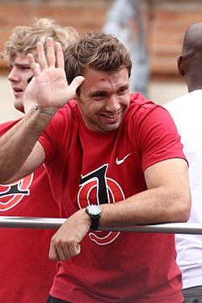
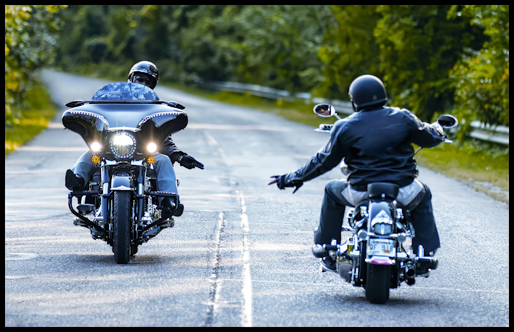
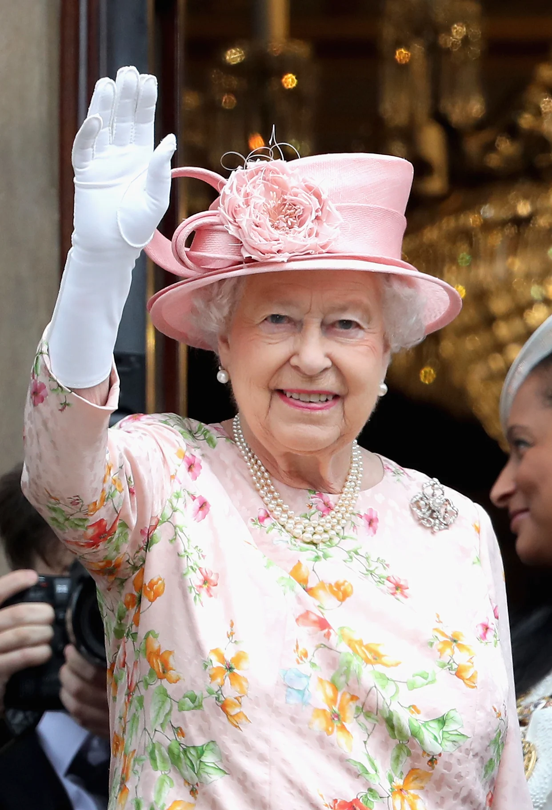
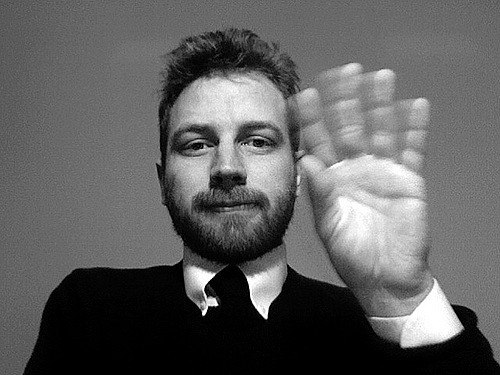
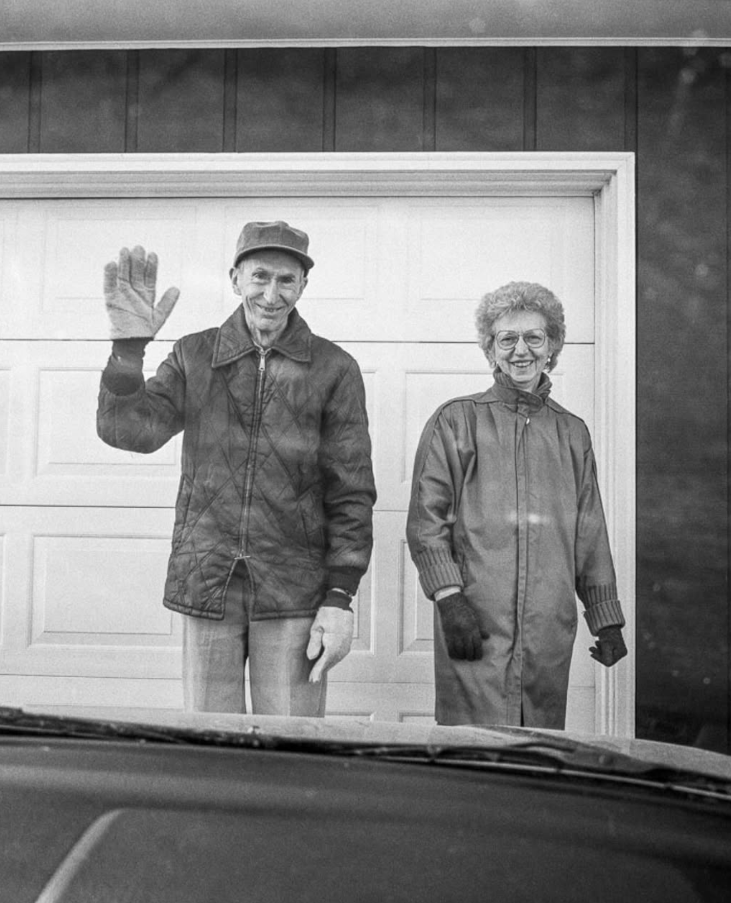
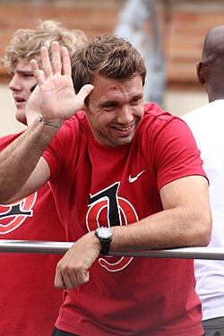
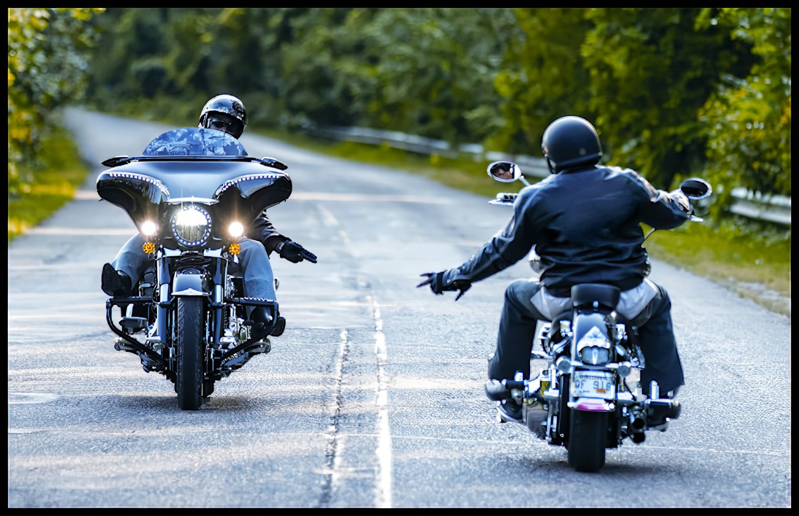
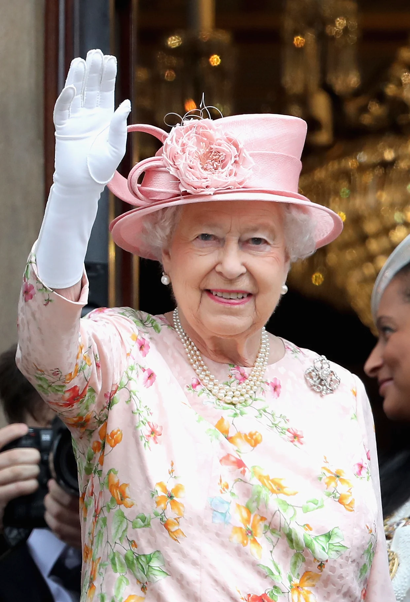
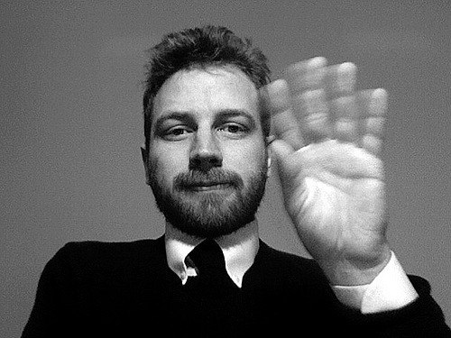
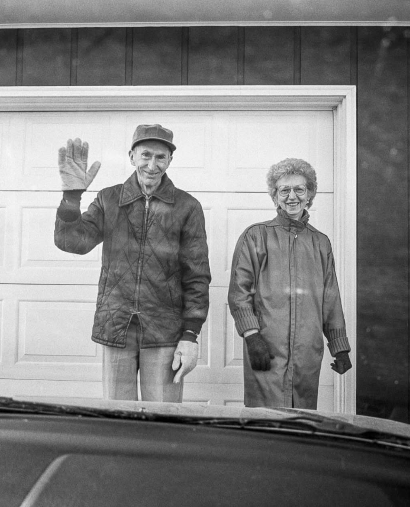
 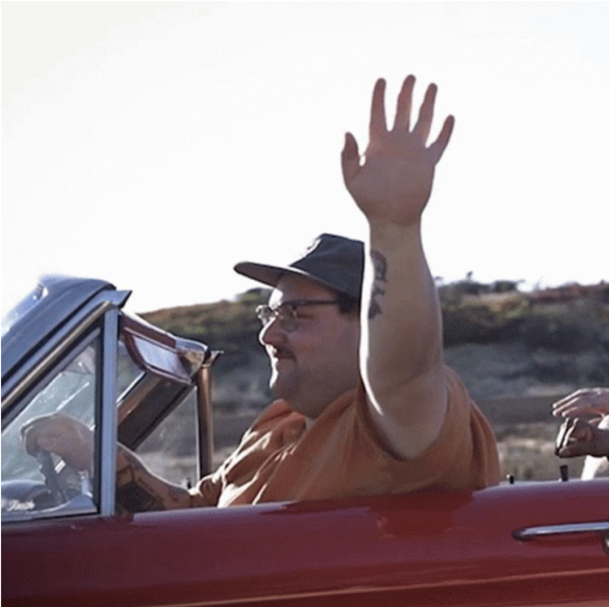
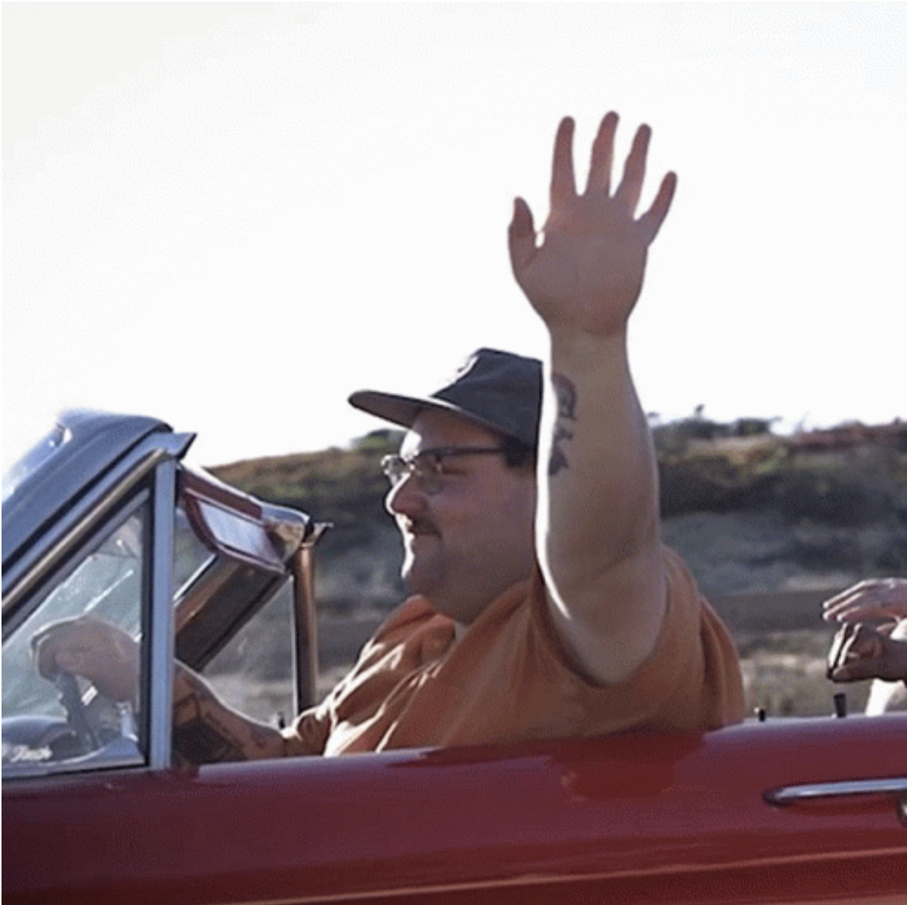